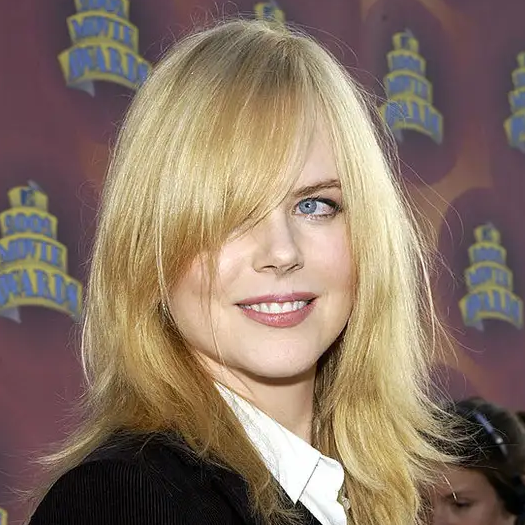

The Hairstyles We All Regret From Middle School (But Secretly Miss)
I'm imagining Samaire Armstrong looking in a mirror, like, "And this last little piece goes riiiiiight...here. PERFECT!"When a wild Ryan Cabrera feels startled or threatened, it raises its quills as a form of protection. I can never remember if it's a stalagmite or a stalactite.Pretty sure I've seen this in a Nat Geo special about the horrors of the deep sea.Here's Tara Reid testing the limits of her Hollywood Bump-It™.Here's P!nk on the way to see her old college friend about some Dalmatian puppies.

WHAT IS SHE HIDING UNDER THERE?!It's giving strawberry flavored Creme Saver.